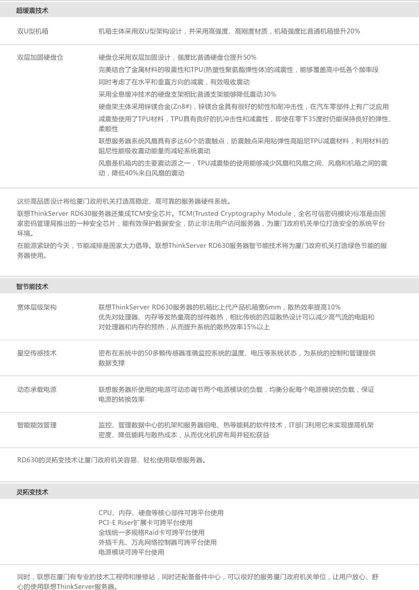

200台服务器项目对厦门乃至整个福建都是一个大项目，并且此次采购有着广泛的使用群体，对客户开拓和后期项目合作都有着深远的意义，所以各个服务器厂商都十分重视，都想力争拿下此单。
在众多的竞争厂商中，DELL无疑是最有力的竞争着。DELL在中国总部在厦门，厦门政府给DELL多方位的优惠政策，占着“地利”、“人和”等有利条件。
项目产品推荐使用联想ThinkServer RD630服务器。RD630是联想精心铸炼，集品质、创新、易用等特性于一身的两路机架服务器。Think品质，20年见证。联想ThinkServer RD630服务器从最小的电子器件单元电子电容寿命2倍于行业标准。通过中国及欧美等国 众多国家认证体系，包括美国FCC 240VA安全设计、Smokeless安全设计等。此外联想ThinkServer RD630服务器的超缓震技术将 大大降低服务器的故障率。
本次厦门大宗200台服务器联想中标有力的挫伤DELL的锐气，约30个厦门政府机关单位使用联想ThinkServer服务器。联想服务器在厦门塑造一个良好开端，为联想服务器扩大领地、全面开花奠定坚实的基础。